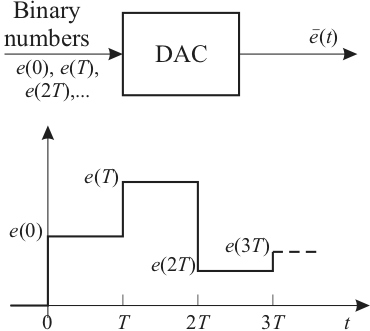

6.1. Introduction to Digital Systems¶
Digital systems are important in modern technology because they are used extensively to implement designs that previously used analogue (continuous) technology.
The concepts developed for continuous systems are all applicable to digital systems.
This introduction commences with digital signals, continues with digital systems, and ends with an overview of how analogue systems may be converted to digital systems.
6.1.1. Analogue v Digital¶
The real world we inhabit is analogue. We process analogue signals: e.g. vision and sound. Physical systems are analogue systems of force, velocity, current, voltage, temperature pressure, etc.
Advances in electronics means that more and more of the storage, distribution and processing of signals is actually done using digital technology.
There have to be methods of converting analogue to digital (e.g. recording of sound) and digital to analogue (e.g. signals delivered by loudspeakers).
We need to be able to model the signals, their conversion and the systems that process them.
6.1.2. Samplers and Discrete-Time Physical Systems¶
As hinted in the introduction, we need to convert analogue signals to digital signals before the digital signal can be stored, distributed and manipulated by a digital system. At the point of delivery, we need to convert the signal back into digital form. In this section we introduce the signal conversion devices and give an example of one commonly seen digital system.
6.1.2.1. Analogue to Digital Converter¶
We begin by describing the digital to analogue converter (D/A or DAC), since this device is usually also a component of the analogue to digital compensator (A/D or ADC). We assume that the DAC receives a digital signal, in the form of a binary number, every \(T\) seconds (usually from a digital computer, micro-controller or a digital signal processor). The DAC converts the binary number to a constant voltage equal to the value of that number, and outputs this voltage until the next number arrives and the DAC input. The block diagram of the DAC and a typical response is shown in Figure 1.
6.1.2.1.1. Digital to Analogue Converter (D/A or DAC)¶
 Figure 1
We next describe a comparator, which is also a component of the ADC. A comparator and its characteristics are illustrated in Figure 2. The input voltage \(v_i(t)\) is compared with the reference voltage \(v_r(t)\). If \(v_i(t) > v_r(t)\) the comparator outputs logic “1”; for example logic 1 is 5V for TTL logic. If \(v_i(t) < v_r(t)\) the comparator outputs logic “0”; which is less than 1V for TTL logic. The signal ground is normally omitted from circuit diagrams, but all voltages are compared relative to signal ground.
#### Comparator
 Figure 2
Figure 2
Several circuits are used to implement an analogue to digital converter. Each circuit has different characteristics. We illustrate the up-counter ADC shown in Figure 3. The \(n\)-bit counter is reset to zero when the start-of-conversion (SOC) signal is received by the device. The count increases by 1 with the arrival of each clock pulse. The \(n\)-bit DAC converts the binary equivalent of the count to a voltage \(v_R\).
#### The Counter ADC
 Figure 3
Figure 3
The analogue voltage \(v_x\) to be converted is compared to \(V_R\). When \(V_R\) becomes greater than \(v_x\), the comparator outputs a logic 0, which halts the clock input through the AND gate. The end-of-conversion (EOC) pulse then signals that the digital equivalent to \(v_x\) is ready. The counter output can then be read from the digital output as a binary number which is approximately equal to the analogue input.
6.1.3. Digital Systems¶
Once we have the ability to convert analogue signals into binary numbers and back, we have the ability to process the information using computers and other digital devices. A once familiar device will be the compact disk (CD) player.
6.1.3.1. Compact Disk (Analogue to Digital)¶
Continuous time signal is filtered with an “anti-aliasing” band-pass filter with bandwidth of 5 to 20,000 Hz.
Filtered audio signal sampled using ADC at 44,100 samples per second and with 14-16 bits precision.
Each sample is stored, along with error correcting bits, as a stream of binary codes.
The codes are recorded using microscopic pits etched into the surface of the CD.
6.1.3.2. Compact Disk (Digital to Analogue)¶
For stereo music, two channels are sampled and stored.
Data is stored on a continuous track that spirals outwards from the centre.
Data is read at a constant rate (44,100 Hz) and is processed (e.g. error corrected and buffered for tilt control) before being converted, using DAC, to a signal that can be delivered to a loudspeaker.
Velocity of disk needs to be controlled so that it decreases as the radius of the track increases. Position and the focus of the laser used to read the data is also controlled.
Audio CD holds approx. 540 MBytes of data which is enough to store 74 minutes of stereo music.
6.1.4. Generation of Digital Signals¶
Digital signals do not occur naturally. They are generated by sampling continuous signals, or by digitally processing other digital signals. Sampling is accomplished by a sampler known as an “Analogue to Digital Converter (ADC)”.
6.1.4.1. Sampling and Sequences¶
Sampling - mathematical model of the ADC
Sampled signals are modelled as sequences
Sequences can be shifted backwards (advanced) and forwards (delayed)
The advance and delay operators are analogies to the derivative and integral operators
6.1.4.1.1. Sampling – Mathematical model of the ADC¶
 Figure 4
Figure 4
The analogue to digital converter is modelled as a switch as shown in Figure 4.
Quantisation, introduced by converting an analogue signal to a binary number with a finite number of bits, will not be considered.
6.1.4.1.2. Modelling Sampling: Sequences¶
At each sampling instant the switch is closed for an infinitesimal time, during which the digital signal has the same value as the continuous signal.
The digital signal is therefore a “Sequence”
which will be denoted by
At each sampling instant the switch is closed for an infinitesimal time, during which the digital signal has the same value as the continuous signal. The digital signal is therefore a “Sequence”
which will be denoted by
6.1.4.1.3. Modelling sampling: Regular Sampling¶
Only regular sampling will be considered. A constant period \(T\) s between sampling instants is equivalent to a sampling frequency \(\omega_s\) rad s\(^{-1}\), where
Sampling is assumed to be synchronized to the time origin \(t=0\) so that
6.1.4.1.4. Sampling: The Signals¶
 Figure 5
Figure 5
6.1.4.1.5. Sampling: Indexing the sequence¶
The index \(k\) denotes the current value. Digital signals will be taken as zero prior to the time origin, in the same way as continuous signals:
Except in cases where it is necessary to distinguish between them, both the continuous signal \(v(t)\) and the digital signal \(\left\{v_k\right\}\) will be denoted by \(v\).
6.1.5. Shifting Digital Signals¶
Shifting digital signals is the mechanism by which dynamic behaviour is introduced into digital systems.
The shifting operators are comparable to differentiating and integrating continuous signals.
6.1.5.1. Forward Shifting a Digital Signal¶
The first forward shift of a digital signal \(v\) is generated by applying the “Advance Operator” \(\triangle\) to give the advanced digital signal \(\triangle v\), where
The signal \(v\) is advanced by one value (a time advance of \(T\)). \(v_0\) vanishes because \(\triangle v\) is zero prior to \(t=0\).
Repeated operation gives the \(r\)-th forward shift
6.1.5.2. Advance and Derivative Operator¶
The advance operator \(\triangle\) is equivalent to the derivative operator \(d/dt\).
Neither the advance operator \(\triangle\) nor the derivative \(d/dt\) is physically realistic.
\(\triangle\) is not realistic because the current value of \(\triangle v\), which is \(\triangle v_k\), is the future value of \(v_{k+1}\) of the signal \(v\).
The Advance operator \(\triangle\) for digital signals is equivalent to the differential operator \(d/dt\) for continuous signals. The first forward shift \(\triangle v\) \(\equiv\) first derivative \(dv/dt\). The \(r\)-th forward shift \(\triangle^r\) \(\equiv\) \(r\)-th derivative \(d^rv/dt^r\). Neither the \(\triangle\) operator nor the \(d/dt\) operator are physically realistic.
6.1.5.3. Backward Shifting a Digital Signal¶
The first backward shift of a digital signal \(v\) is generated by applying the “Delay Operator” \(\nabla\) to give the delayed digital signal \(\nabla v\), where
The signal \(v\) is delayed by one value (a time delay of \(T\)).
Repeated operation gives the \(r\)-th backward shift
The delay operator \(\nabla\) is equivalent to the integral operator \(\int\).
The delay operator \(\nabla\) is not only physically realistic but can be implemented easily by storage and retrieval in a digital computer.
The delay operator \(\nabla\) for digital signals is equivalent to the integral operator \(\int dt\) for continuous signals. The first backward shift \(\nabla v\) \(\equiv\) first integral \(\int v dt\). The \(r\)-th backward shift \(\nabla^r\) \(\equiv\) \(r\)-th integral \(\int \int \cdots \int v dt\). Both the \(\nabla\) operator and the \(d/dt\) operator are physically realistic.
6.1.5.4. Mathematical and Computer Models¶
Advance operators (like differential operators) are best suited to mathematical models.
Delay operators (like integral models) are best suited to computer models.
6.1.5.4.1. Block Diagram Model¶
In a Digital Operational Block Diagram the fundamental dynamic operation is denoted by the delay operator

6.1.6. Definition of the z Transformation¶
The \(z\) transformation has the same role in digital systems that the Laplace transform has in continuous systems.
The \(z\) transformation of a digital signal \(v\) is defined as
Similarly, \(v\) is the inverse \(z\) transform of \(V\), or
6.1.6.1. z Transform is a summed series¶
Obtaining \(z\) transforms involves summing series.
Often this is a binomial series
The transform pairs for common functions are put into tables so that it is not necessary to sum a series in most cases.
6.1.6.2. Example 1: What is the z Transform of the Unit Impulse \(\delta(t)\)?¶
If \(v\) is the digital sequence \(\{\delta_k\}\), that is
\(z\) transform is
Thus \(\mathcal{Z}(\delta(t)) = 1\).
6.1.6.3. Example 2: What is the z Transform of the Unit Step \(\epsilon(t)\)?¶
If \(v\) is the digital sequence \(\{\epsilon_k\}\), that is
\(z\) transform is
This is summed as a binomial series as
6.1.6.4. Example 3: z Transform of a Power Series¶
Another example which is commonly found is the digital signal \(v\) given by \(\{v_k\} = \{\alpha^k\}\). What is the \(z\)-transform of this signal?
\(\{v_k\} = \{\alpha^k\}\)
The \(z\) transform is
\(\ldots\) which is summed as a binomial series as
6.1.6.5. Example 4: z Transform of a Continuous Signal¶
If the digital signal \(v\) is generated by sampling the continuous signal \(v(t)\), then the transform \(V\) also has a correspondence with \(v(t)\).
For example, if
then
\(\ldots\) So, from the previous result, with \(\alpha=e^{-aT}\), we have the \(z\) transform as
6.1.7. z Transforms of the Shift Operators¶
6.1.7.1. z Transform of the Forward Shift¶
This is similar to the derivative property of the Laplace transform.
It also introduces the initial member \(v_0\).
We can also show that
and in general
6.1.7.2. Example 5: Proof of z Transform of Forward Shift¶
Prove that the \(z\) Transform of the Forward Shift:
To prove the relationship illustrated in we note that
so that
Similar arguments may be used to prove the other relationships shown in the previous slide.
6.1.7.3. z Transform for the Backward Shift¶
This is similar to the integral property of the Laplace transform.
The proof is similar to the Forward shift case and is left as an exercise.
6.1.8. The Inverse z Transformation¶
The inverse \(z\) transform of \(V\) is \(\mathcal{Z}^{-1} V = v\), where \(v\) is a digital signal, that is a sequence.
This contrasts with the inverse Laplace transformation, which gives functions of time.
As the definition of the transform involves \(z^{-1}\), through
it is often useful to commence the inversion if \(V(z)\) by expressing it as a function of \(z^{-1}\) rather than of \(z\).
6.1.8.1. Methods of obtaining the inverse z Transform¶
There are several methods for obtaining inverse \(z\) transforms.
They generally involve expressing \(V\) as a series involving powers of \(z^{-1}\), from which the coefficients give the sequence \(\{v_k\}\) that is \(v\).
Alternatively, a partial fraction expansion is used to obtain terms from which the inverse transforms may be looked-up from tables.
6.1.8.2. Example 6¶
Use the direct and indirect methods to determine the inverse \(z\) transform of
6.1.8.2.1. Direct Method (polynomial division)¶
This involves expressing \(V\) as a function of \(z^{-1}\), and dividing the numerator polynomial by the denominator polynomial.
First express \(V\) as a function of \(z^{-1}\) by multiplying numerator and denominator by \(z^{-3}\).
Then divide
So
6.1.8.2.2. Indirect Method (partial fraction expansion)¶
This also involves expressing \(V\) as a function of \(z^{-1}\), but now the denominator is factorized and a partial fraction is obtained.
So
Inverse transforming each term from tables gives $\(\begin{aligned} v&=30\{(1/2)^k\}-10\{(-1/2)^k\} -16 \{\epsilon_k\}\\ &= \begin{array}{ccccccc} 4 & 4 & -11 & -11 & \cdots & \cdots & -16 \end{array}.\end{aligned}\)$
The direct method of polynomial division is useful for obtaining the first few members of a sequence, and the indirect method of partial fraction expansion is useful for obtaining a closed-form representation of the sequence (if one exists).
Two further properties of the \(z\) transform are useful for finding the initial and final values of a sequence.
6.1.9. Initial and Final Values of a Sequence¶
Initial Value Property
Final Value Property
6.1.9.1. Example 7¶
Determine the initial and final values of the response of the system given in Example 6.
In the example, the initial value is
The final value is